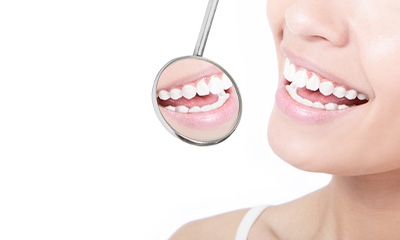

- 立川の歯医者「たけだなおや歯科クリニック」TOP
- 予防の重要性について
できるだけ患者さんの歯を残して、健康な暮らしをサポートするために――。予防中心の歯科治療を提案する、立川市の「たけだなおや歯科クリニック」。こちらではプロケアとホームケアの2軸でお口の中を良い状態に保っていく、予防の重要性について解説します。
虫歯や歯周病から
歯を守るために
～予防について考えよう～
予防やメインテナンスはなぜ必要？
虫歯や歯周病になっても、ちゃんと治療を受ければ治せる。そんな風に思っている方も多いことでしょう。たしかに、治療を受けると症状が改善したり、痛みが引いたりします。
しかし虫歯を削ればダメージが歯に残ってしまいます。歯周病で減った歯ぐきは、一般的な治療法だけでは元に戻りません。だからこそ、虫歯や歯周病のようなお口の病気にかからないようにする「予防」が大切なのです。

お口の病気を防ぐことは、全身の健康を守ることにつながります。また治療にかかる費用を抑えることもできます。さらに、見た目もキレイになり、気分までリフレッシュできるというメリットも。こんな風に良いことだらけの予防。ぜひ一緒に取り組みましょう。
歯周病治療では、セルフケアとプロフェッショナルケアの両方が大切
「ちゃんとみがいている」
という、過信は禁物です。
毎日きちんと歯みがきをしていれば、お口の中はキレイで、虫歯や歯周病をちゃんと予防できる。そうお考えの方も、まだまだ多いようです。たしかに、虫歯や歯周病の予防において、自身で行うお口のケア（セルフケア）は欠かせません。しかし実際には、ご自身での歯みがきだけで歯垢を完全に除去するのは難しいもの。また歯にこびりついた歯石やバイオフィルムは、歯みがきだけでは除去できません。
だからこそ、日々のセルフケアに加えて、定期的に歯科医院に通ってお口の中をメインテナンスする「プロフェッショナルケア」を受けることが大切。歯科医院によるプロケアでは、口腔内の状態に合ったお口のクリーニングなどによって、歯みがきだけでは落としきれない汚れをキレイにすることができます。
最適な歯みがき方法から、
歯科衛生士がサポートします
予防のためには、プロケアとセルフケアのどちらかが欠けても十分な効果は期待できません。そこで重要になってくるのが、ご自身で行う日々の歯みがき。いくら定期的にプロケアを受けていても、その間の歯みがきを怠れば、虫歯や歯周病のリスクは高まってしまいます。
歯並びやお口の形は人によってさまざま。また人によって歯みがきのクセもあります。そのため、まずは自分に適した歯みがきの方法を知ることが大切です。当院では患者さんのお口の形状や状態を踏まえ、最適な歯みがき方法をお伝えしています。毎日のセルフケアを効率的に行えるように、歯のみがき方から一緒に考えてみませんか？